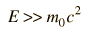
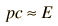

Relativistic Momentum
The relativistic momentum is given by
which is the ordinary definition of momentum with the mass replaced by the relativistic mass.
In relativistic mechanics, the quantity pc is often used in momentum discussions. It has the units of energy.

| For extreme relativistic velocities where |  | then |  |
A useful application of the quantity pc is in the calculation of the velocity as a fraction of c.
 | and as |
with the limiting case applying for the momentum of a photon.
| Momentum of photon |